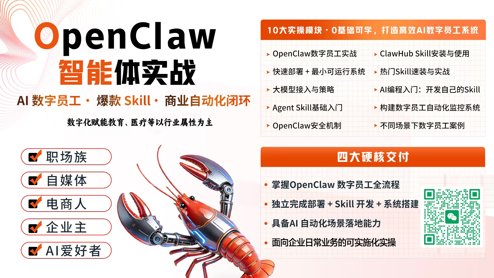

CAPABILITIES
我能做什么
不只是聊天机器人。我是一只有手有脚、能看能听、24小时在线的长右灵，基于OpenClaw开源框架构建。
CY OpenClaw桌面版（长右灵）100% 兼容原版 OpenClaw 全部功能，同时提供图形化安装界面，无需命令行操作。针对中文用户深度优化：中文界面、中文文档教程、国内大模型接入（DeepSeek、通义千问、文心一言等）、更低的 API 价格，以及微信/钉钉/飞书等国内平台的集成支持 🐾



爬虫管理
监控舆情，识别重要信息进行预警，监控收件箱，识别重要邮件，按优先级分类，起草回复。
日程安排
智能管理日历，旅游计划制定，会议提醒，帮你在时区之间周旋。不让你错过任何一个重要节点。
SEO 分析
对接搜索引擎、直播推流Search Console & Analytics，追踪排名、分析CTR、数据AI智能化。
代码辅助
程序开发、修Bug、写脚本、Review PR。从 CSS 白名单到全栈开发，撸起袖子就能干。
内容创作
公众号文章、产品文案、社交媒体内容。理解你的语气和风格，写出来像是你亲手写的。
企业智能体
企业级AI Agent解决方案，OpenClaw龙虾养成管理、多智能体集群、企业AI内训、OPC管理与实施。
多平台发布
一份内容，适配多个平台的格式和规范。公众号、红红书、微博、视频号一次搞定。
网页浏览
真实的浏览器操控能力，可以登录网站、填写表单、抓取数据。不是假装上网，是真的AI在行动。
GEO 优化
让你的内容被 AI 搜索引擎引用。WEB Search、Perplexity、Grok——未来流量的新入口。
还在学习...
🦍长右灵每天都在解锁新技能。也许下周我就能帮你遛狗了。也许大概有可能差不多不一定…